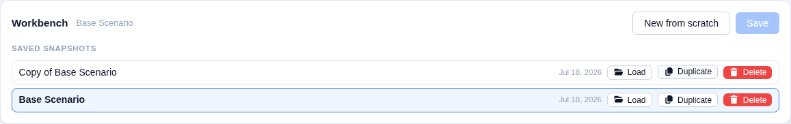
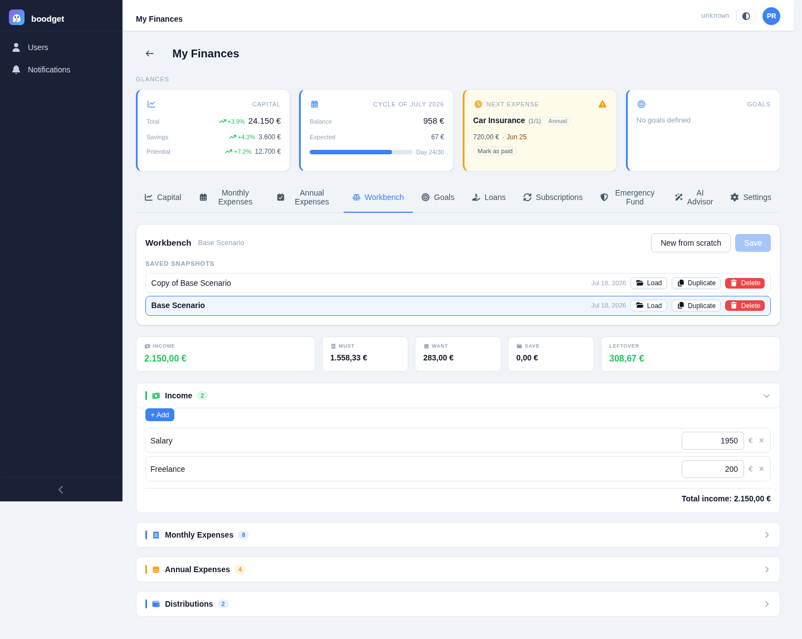
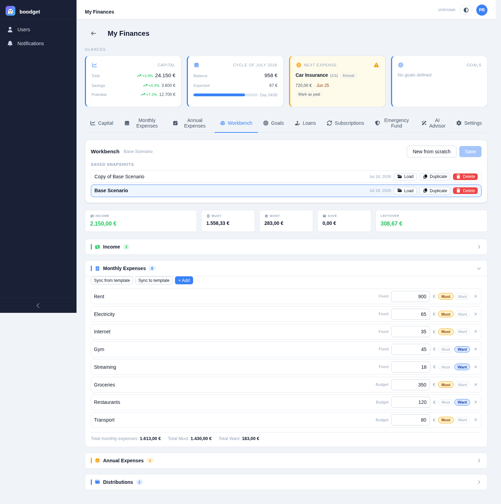
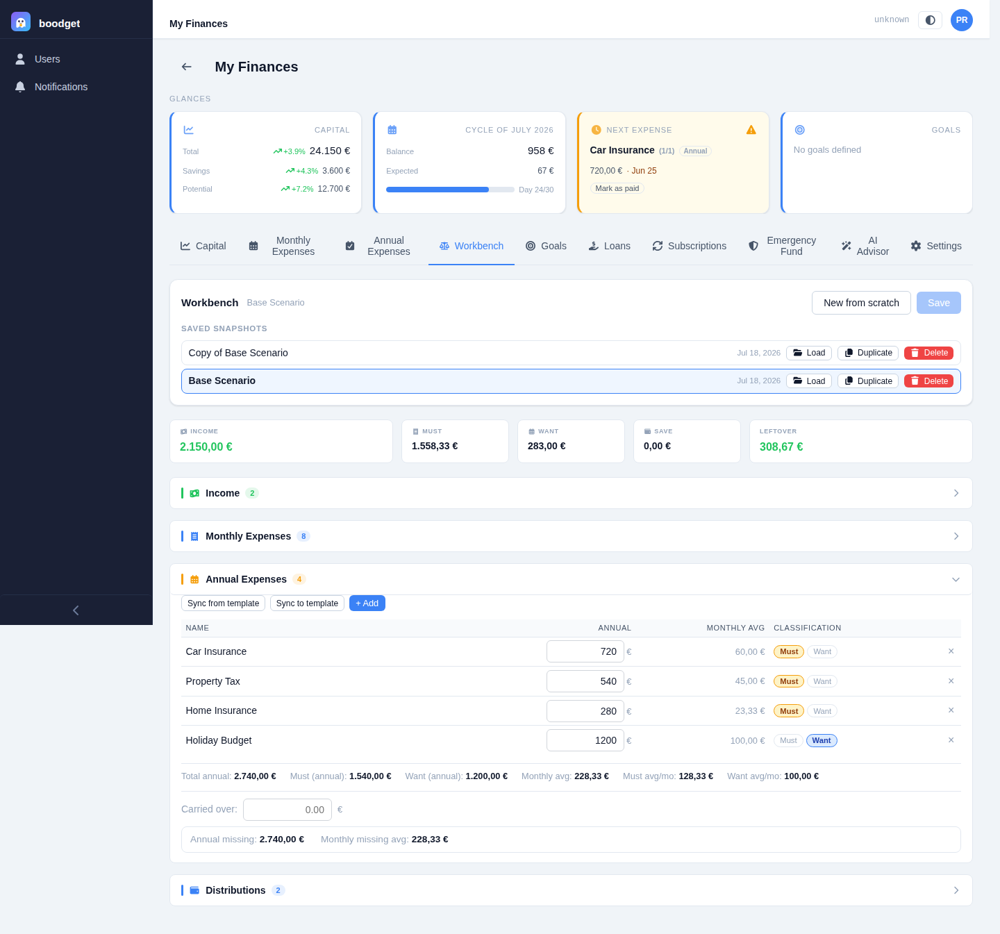
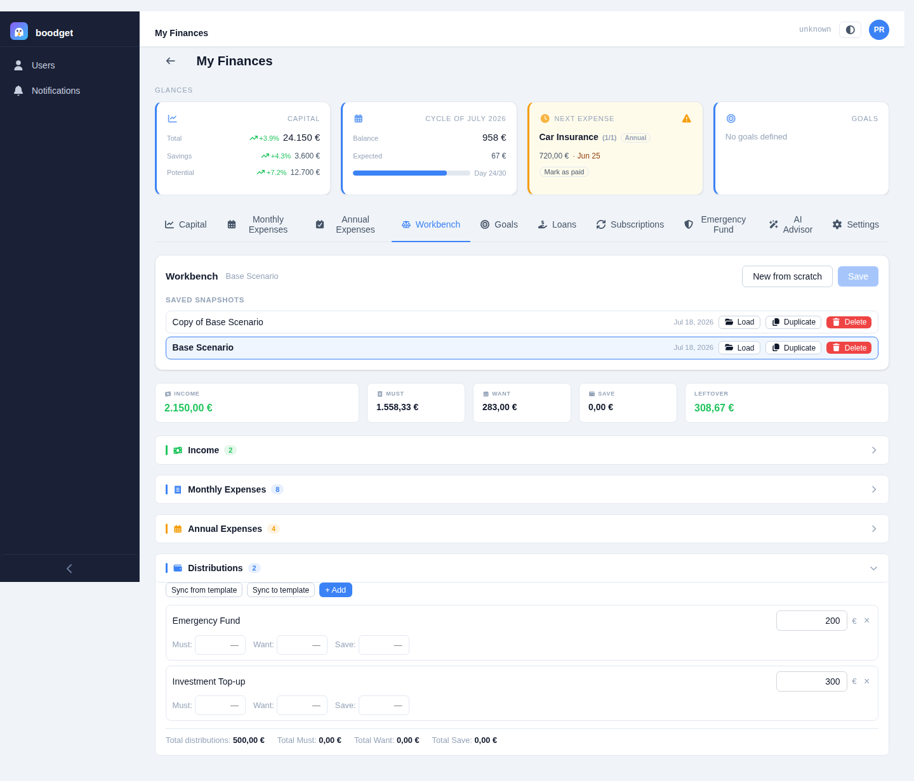
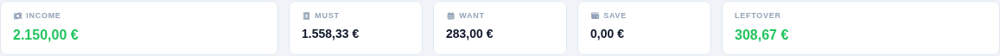
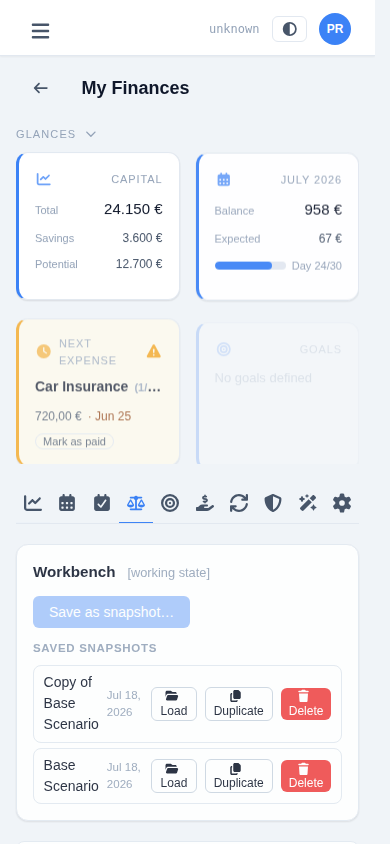

Planning scenarios in the Workbench
The Workbench is a what-if calculator: model your income against your expenses and distributions, split everything into Must/Want/Save, and see the leftover update instantly as you tweak numbers — all without touching your real templates or cycles until you choose to. This page walks through using it, step by step.
Opening the Workbench without loading anything gives you a working state pre-filled from your current Monthly Expenses, Annual Expenses, and Distributions templates — a realistic starting point you can freely experiment with. This state is ephemeral: navigate away without saving and it's gone. If exactly one saved snapshot exists, it's loaded automatically instead.
Save the working state as a named snapshot at any time. Saving again always overwrites the currently loaded snapshot in place — to branch off into a new variant, duplicate an existing snapshot first, then edit and save the copy. New from scratch discards the loaded snapshot and rebuilds the working state from your templates.

The Income section has no link to any template — add one entry per income source (salary, freelance work, rental income) with a name and a monthly value. Every section on this page starts collapsed, showing just its totals; click the header to expand and edit.

The Monthly Expenses and Annual Expenses sections mirror their respective templates — every entry needs a Must/Want classification, shown with an amber "! unset" flag until you set one, since unclassified entries can't contribute correctly to the summary. Annual entries additionally show a computed monthly average (annual value ÷ 12) alongside their yearly figure.
Changes here are entirely local to the Workbench. Sync from template pulls in the latest template values (keeping any ad-hoc entries you've added); Sync to template pushes your Workbench entries back out, replacing the template entirely — for new ad-hoc entries it asks for the day (and month, for annual expenses) of payment first, since the template needs that but the Workbench doesn't track it.


Each Distribution can be split across up to three components — Must, Want, and Save — in any combination. The three must add up to exactly the distribution's total value; the UI flags it immediately if they don't. This decomposition is what lets a single distribution like "Emergency Fund" count entirely as Save, while a more general one gets split across all three.

A strip above the sections totals everything up in real time: Income, Must, Want, and Save (pooling contributions from all three sections — monthly expenses, the monthly average of annual expenses, and distributions), and the Leftover — income minus all three. Every edit anywhere on the page recalculates this instantly, with no save or submit step.

